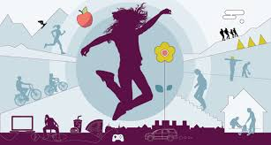
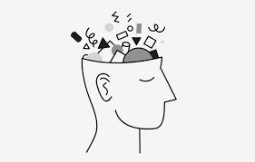
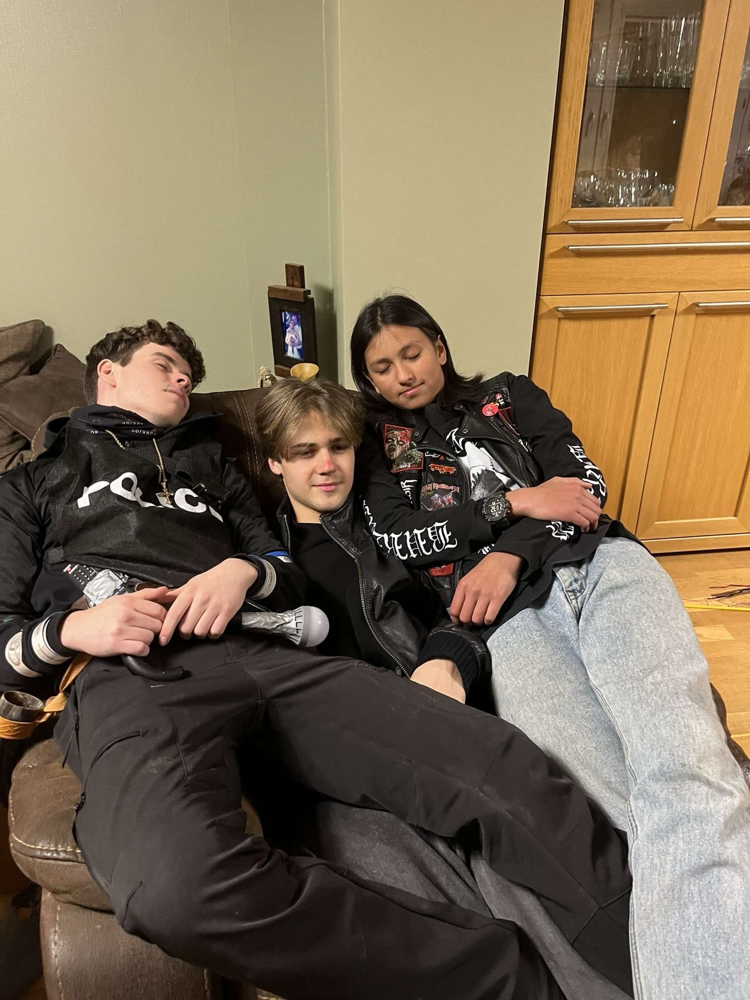
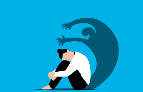
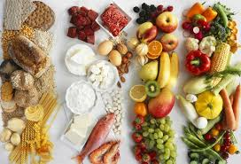
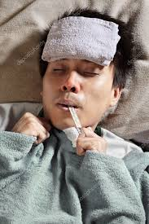

Fysisk helse refererer til kroppens tilstand og evne til å fungere optimalt uten smerter, sykdommer eller skader. Den omfatter viktige faktorer som regelmessig trening, et balansert kosthold og tilstrekkelig søvn. Fysisk aktivitet styrker musklene, øker energinivået og bidrar til bedre humør ved å frigjøre kjemiske stoffer i hjernen som forbedrer den psykiske helsen. Et sunt kosthold, rikt på frukt, grønnsaker og næringsstoffer, gir kroppen de nødvendige næringsstoffene for å opprettholde god helse. I tillegg er god søvn avgjørende for å støtte både fysisk restitusjon og mental velvære. Samlet sett er god fysisk helse en viktig byggestein for et godt liv og en positiv livskvalitet.
Psykisk helse handlar om korleis vi føler oss, tenkjer og kontrollerer følelsane våre. Det dreier seg ikkje om å ha det godt heile tida, men om å kunne finne glede i aktivitetar og meistre dei utfordringane ein møter i kvardagen. God psykisk helse inneber evna til å handtere ulike situasjonar, ha gode relasjonar til familie og venner, og kjenne seg trygg og glad. Det betyr ikkje at ein ikkje kan oppleve vanskelege periodar, men at ein klarer å håndtere dei på ein konstruktiv måte. Sosiale relasjonar spelar ei sentral rolle, då gode venner og familie kan hjelpe oss med å føle oss trygge og støtta. Målet er ikkje perfeksjon, men å utvikle robustheit og evne til å takle livets opp- og nedturar.
Samanhengen mellom fysisk og psykisk helse er sterk og går begge vegar. Fysisk aktivitet har ein direkte positiv effekt på vår mentale tilstand og kan bidra til å forbetre både fysisk og psykisk helse. Her er nokre viktige punkt:
Søvn er en essensiell del av vår helse og velvære, og den spiller en kritisk rolle for både fysisk og psykisk helse. God søvn er nødvendig for å opprettholde kroppens funksjoner, inkludert immunforsvaret, hormonbalansen og kognitive prosesser som hukommelse og læring. Mangel på søvn kan føre til alvorlige helseproblemer, som økt risiko for diabetes, hjertesykdom, og psykiske lidelser som depresjon og angst. Kronisk søvnmangel svekker ikke bare humøret og energinivået, men kan også forverre eksisterende helseproblemer. Det anbefales at voksne får mellom 7-9 timer søvn per natt for å sikre optimal helse og livskvalitet. Å prioritere god søvn er derfor avgjørende for å fungere godt i hverdagen og opprettholde en sunn livsstil.
Psykisk lidelse er sjukdommer og tilstander som negativt påverkar tankane og kjenslene våre. Dette kan vere diagnosar som ADHD, angst og depresjon. Ein psykisk lidelse kjenneteiknas ved at ein sjeldan har det bra og har vanskeleg for å handtere kvardaglege utfordringar. Det betyr ikkje at ein ikkje kan ha gode periodar, men at dei psykiske utfordringane vedvarande påverkar livskvaliteten. Slike lidingar kan gjere det vanskeleg å meistre sosiale relasjonar, utdanning eller arbeid, og kan ha stor innverknad på personens totale livssituasjon. Det er viktig å understreke at psykiske lidingar er behandlingsbare, og at profesjonell hjelp kan bidra til å forbetre livskvaliteten betydeleg.
Næringsstoff er essensielle komponentar i maten vi et, og dei spelar ei avgjerande rolle i å oppretthalde god helse. Dei viktigaste næringsstoffa inkluderer karbohydrater, proteiner, fett, vitaminer og mineraler. Karbohydrater gir energi, medan proteiner er nødvendige for vekst og reparasjon av vev. Fett er også ein viktig energikjelde og bidrar til opptak av fettløselige vitaminer. Vitaminer og mineraler støttar ulike kroppslige funksjonar, inkludert immunforsvaret, stoffskiftet og beinhelse. Å ete eit variert kosthold rikt på frukt, grønnsaker og næringsrik mat sikrar at kroppen får dei nødvendige næringsstoffa for å fungere optimalt. God ernæring er ikkje berre viktig for fysisk helse, men har også ein positiv innverknad på den psykiske helsen, ved å bidra til betre humør og energinivå.

Å ta vare på helsa handlar om å vere bevisst på både fysiske og psykiske behov. Dette inkluderer regelmessig fysisk aktivitet, sunt kosthold, tilstrekkeleg søvn og mentalt overskudd. Viktige strategiar er å lytte til kroppens signal, ikkje presse seg sjølv for hardt, og prioritere sjølvomsorg. Det betyr å gjere aktivitetar som gir glede og avslapping, som å lese ei bok, teikne, høyre på musikk eller meditere. Sosiale relasjonar er også sentrale - det å tilbringe tid med personar ein er glad i, vere bevisst på skjermbruk og snakke opent om vanskelege tema. Hovudprinsippet er å behandle seg sjølv med same omsorg og respekt som ein ville gjort med ein god ven. Å ta pausar, erkjenne eigne grenser og finne ein balanse mellom aktivitet og kvile er avgjerande for å oppretthalde god helse.
Å ikkje ta vare på helsa si kan føre til alvorlege konsekvensar for både kropp og sinn. Fysisk kan det resultere i trøttheit, slappheit og redusert energi, noko som gjer det vanskeleg å utføre daglegdagse oppgåver. Ein blir også meir utsatt for sjukdommar som influensa på grunn av svekka immunforsvar. Psykisk kan det føre til lav sjølvkjensle, manglande evne til meistring og redusert motivasjon, særleg i skule- eller jobbsamanheng. Sosialt kan det føre til isolasjon og einsemd, då ein manglar overskudd til å vere med venner eller delta i aktivitetar ein vanlegvis likar. Dette kan igjen forsterke negative kjensler og stress. Samla sett kan forsømming av helsa føre til ein negativ spiral som påverkar livskvaliteten på mange områder, både fysisk, psykisk og sosialt.
